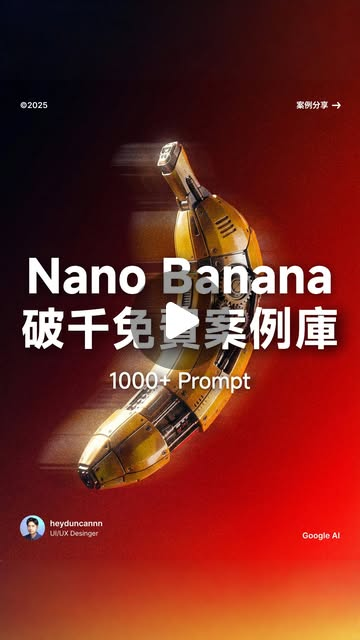

Duncan 當肯｜Nano Banana Pro 1000+ 案例提示詞：社群 Prompt 案例庫與 Gemini 3 Pro Image

一句話摘要
這則 Threads 是典型「Prompt 案例庫導流」貼文：公開內容宣稱整理了 1000+ Nano Banana Pro 案例提示詞，但實際文檔連結透過留言/追蹤後 IG 私訊發送；可保存為社群學習資源訊號，但不能把未公開文檔內容當成已驗證資料。
貼文內容
Duncan 當肯主文：
- 「1000+ Nano Banana Pro 案例提示詞」
- Google 更新最強生圖模型 Nano Banana Pro。
- 整理了一份 1000+ 案例提示詞教學文檔。
- 標籤：#GoogleAI #NanoBanana #ai。
後續置頂留言說明：留言踴躍，優先提供給粉絲；如果已追蹤未收到，再留言。其他回覆多是「連結發到 IG 給你囉」。
圖片 OCR
封面可見：
- Nano Banana
- 破千免費案例庫
- 1000+ Prompt
- 右上「案例分享 →」
- 左下 heyduncannn / UIUX Designer
- 右下 Google AI
- 中央是一根機械金屬質感香蕉，背景紅黑漸層。
官方查核：Nano Banana Pro 是什麼
Google 官方資料確認：
- Google Blog〈Nano Banana Pro: Gemini 3 Pro Image model from Google DeepMind〉將 Nano Banana Pro 定位為 Google DeepMind 的新影像生成與編輯模型。
- Google DeepMind 頁面標題為「Gemini 3 Pro Image — Nano Banana Pro」，描述為 studio-quality levels of precision and control。
- Google AI Developers Gemini API image generation 文件列出 Nano Banana Pro（Gemini 3 Pro Image / `gemini-3-pro-image`），並將其定位為 premium choice for the most complex visual tasks，包含 world knowledge、localization、brand consistency 與 precision creative control。
- Gemini 圖像生成頁也提到 Google AI Pro、Plus、Ultra 使用者可透過「Redo with Pro」使用 Nano Banana Pro 重新生成圖像。
- Gemini 生成圖像會使用 SynthID / 可見浮水印等透明度機制。
為什麼值得收藏
這則不是因為文檔內容已公開，而是因為它反映了三個趨勢：
- 影像模型進入「Prompt 案例庫」學習階段，使用者需要大量例子來理解模型風格與控制能力。
- Nano Banana Pro / Gemini 3 Pro Image 開始被設計圈、社群內容創作者拿來包裝成教學資源。
- 「留言 +1 / IG 私訊」仍是社群導流與名單收集常見形式，需要把公開資訊與私訊資源分開保存。
可重用的 prompt-library 架構
若未來要把這類案例庫轉成課程素材，建議不是照抄 1000 個 prompt，而是分類成：
- 產品攝影 / 電商圖。
- 角色一致性 / IP 設定。
- 資訊圖 / 教材圖。
- 海報與社群素材。
- UI / landing visual。
- 圖像編輯：換背景、修手部、改文字、改材質。
- 品牌一致性與 localization 測試。
每類保留 3–5 個最穩定範例，比堆疊大量 prompt 更容易教學。
風險與限制
- 本文未取得私訊發送的 1000+ prompt 文檔，不能驗證內容品質、授權或是否含他人素材。
- Prompt 案例庫可能包含未授權的風格、品牌、角色或人像參照；正式教學需重新審核。
- Google 模型與介面功能會變動，舊 prompt 可能失效或需要改寫。
- 官方提到 SynthID / 可見浮水印，但這不是完整著作權或肖像權保證。
來源
- Threads 原文：https://www.threads.com/@heyduncannn/post/DSzooaniKZ-
- Google Blog｜Nano Banana Pro：https://blog.google/innovation-and-ai/products/nano-banana-pro/
- Google DeepMind｜Gemini 3 Pro Image — Nano Banana Pro：https://deepmind.google/models/gemini-image/pro/
- Google AI Developers｜Image generation：https://ai.google.dev/gemini-api/docs/image-generation
- Gemini 圖像生成頁：https://gemini.google/overview/image-generation/